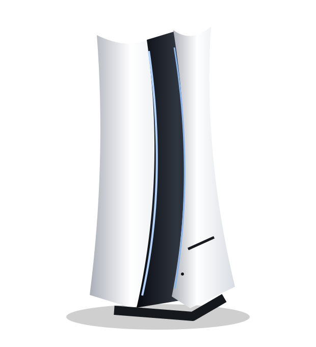

بلايستيشن ٥
ابدأ تجربة لعبك القادمة.
اسأل عن السعر والتوفر ←للّعب عنوان. وللصيانة أهلها.
من اختيار جهاز بلايستيشن إلى إصلاحه، الموسوعة الإلكترونية وجهتك للبيع والصيانة في طرابلس.

 عالمك يبدأ بضغطة.
عالمك يبدأ بضغطة.اختر جهازك
اسألنا عن الأجهزة المتوفرة والأسعار،
ونساعدك تختار ما يناسبك.
ابدأ تجربة لعبك القادمة.
اسأل عن السعر والتوفر ←مكانك بين ألعابك المفضلة.
اسأل عن السعر والتوفر ←الصور توضيحية. يُؤكَّد توفر الأجهزة وأسعارها عند التواصل مع المحل.
الصيانة عند أهل الخبرة
فني صيانة معروف بخبرته، يستقبل جهازك ويفحص المشكلة لتحديد ما يحتاجه من إصلاح.
اشرح لنا عطل جهازك ←اذكر نوع الجهاز، والأعراض التي تظهر، ومتى بدأ العطل.
التشخيص الفني يحدد سبب المشكلة والإصلاح المناسب.
استفسر عن التكلفة والمدة المتوقعة بعد فحص الجهاز.
ركن بلايستيشن ٤
افتح الموقع من متصفح جهازك للوصول إلى ملفات التشغيل. يتم التعرف على إصدار النظام تلقائيًا.
ملفات التشغيل الأصلية محفوظة كما هي.
إصدارك يُكتشف تلقائيًا. كل ما تحتاجه في مكان واحد.
اضغط زر × بعد ظهور «جاهز». في أول زيارة، ثبّت ملفات إصدارك لاستخدامها دون اتصال.
قريبين منك في طرابلس
الموسوعة الإلكترونية — شارع الكندي، أمام فندق السفير